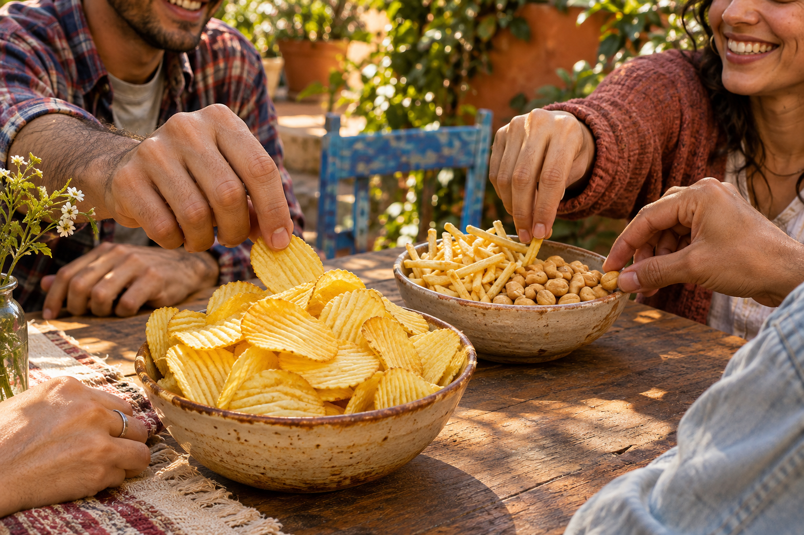

Elegir.
Clásicas, dulces, de distintas formas. La variedad invita a seguir explorando.
Una marca argentina de snacks vinculada con Tucumán. Papas, chizitos, palitos, maní, conitos y tutucas forman parte de su variedad.
VARIEDAD / IDENTIDAD / PRODUCTO


Hay planes que se arman sin pensarlo mucho. Una charla que se alarga, alguien que se suma, una bolsa que se abre y pasa de mano en mano.
Nos gusta imaginar a Zíngaras ahí: entre el «probá este» y el «pasame un poco más». Con variedad para que cada uno encuentre su favorito y siempre quede algo nuevo por descubrir.

Tucumán es parte de la identidad de Zíngaras. Esa cercanía inspira una forma de mirar lo cotidiano: con color, con ganas y con lugar para uno más.
Clásicas, dulces, de distintas formas. La variedad invita a seguir explorando.
En la mesa, en una pausa o en una reunión improvisada. Cada encuentro puede tener su favorito.
A veces no hace falta un gran plan. Alcanza con buena compañía y algo rico para compartir.
Consultanos por productos, variedades y presentaciones. Contanos qué estás buscando y charlemos por WhatsApp.
Tu próximo favorito puede empezar con una pregunta.
Consultar por WhatsApp+54 9 381 477-6734